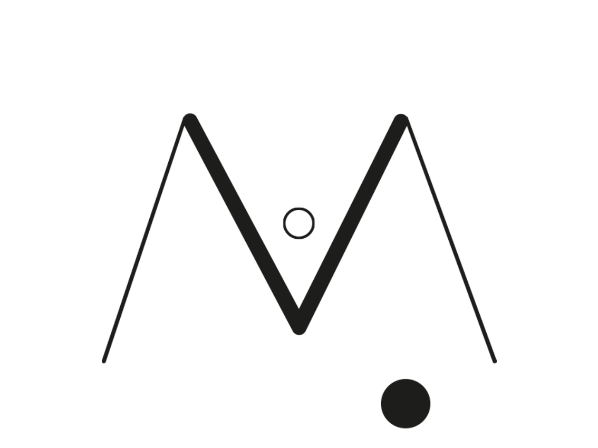
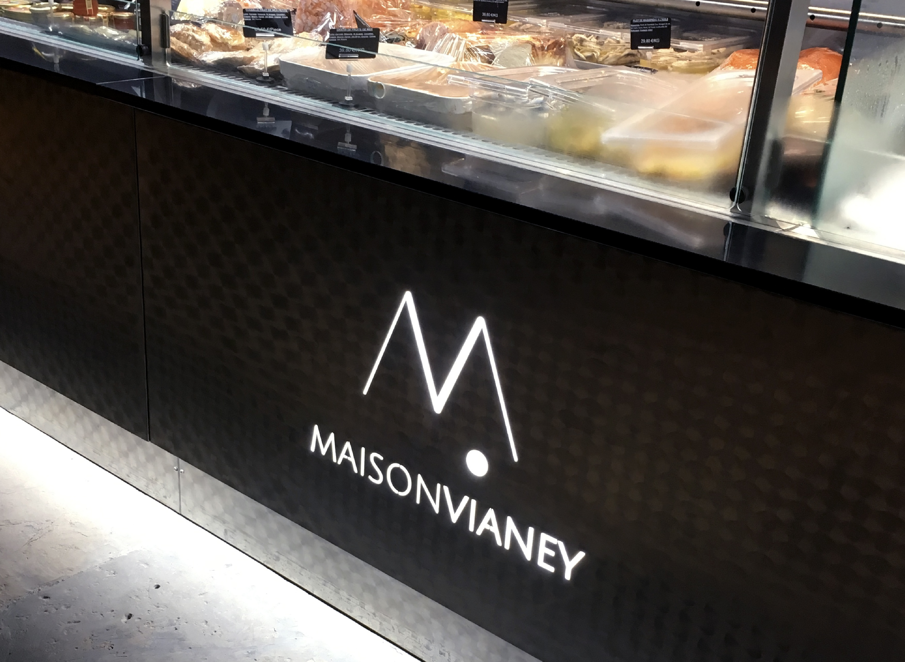
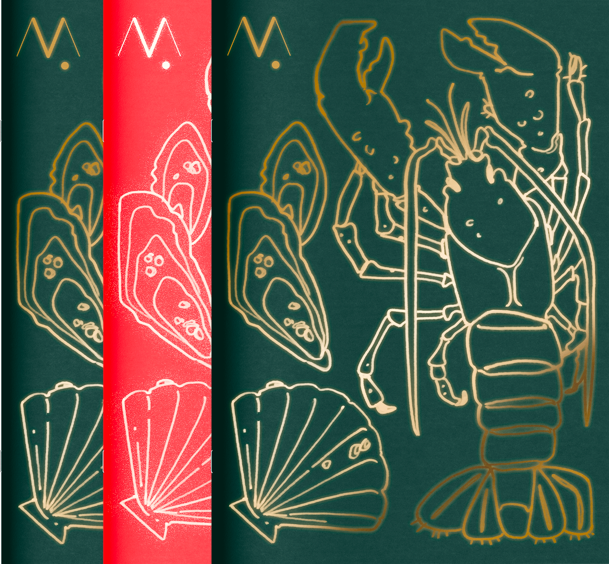
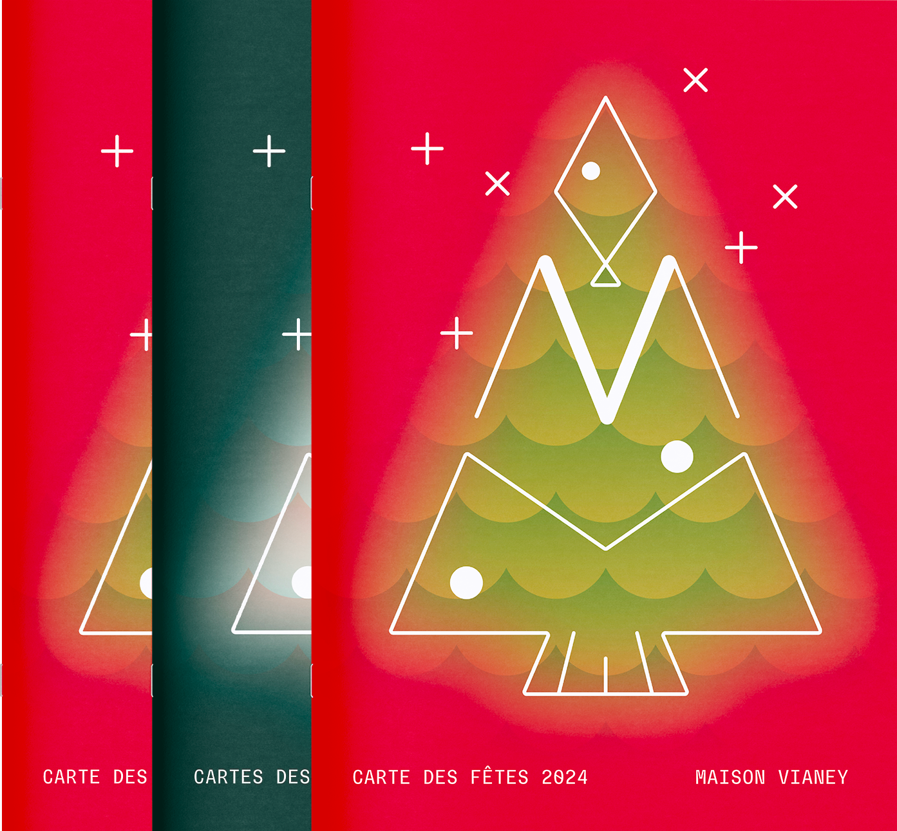

Maison Vianey
Retravailler l’identité graphique d’une institution lyonnaise.
Remettre au centre le prestige et le travail d’orfèvre d’un meilleur ouvrier de France poissonnier.
Cette identité qui reprend les initiales
de la Maison Vianey en dessinant le motif d’une tête de poisson, est à la fois utilisée pour de la signalétique de boutique, ou déclinée en motif pour toujours garder l'enseigne au centre de l’identité graphique.




